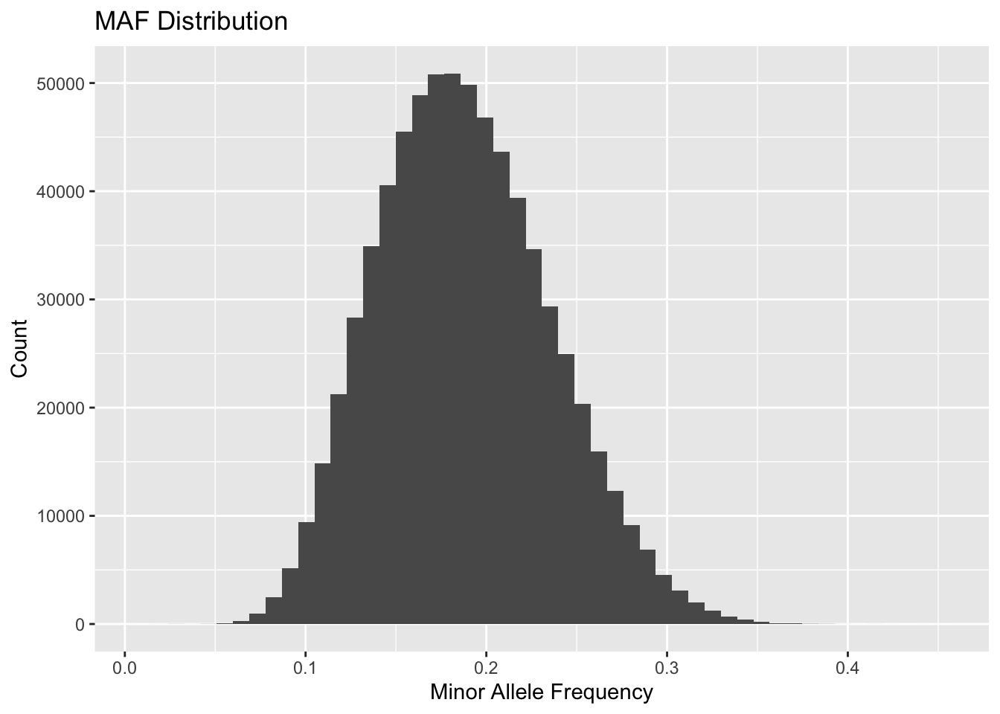

Warning: package 'ggplot2' was built under R version 4.5.2
library(dplyr)
Attaching package: 'dplyr'
The following objects are masked from 'package:data.table':
between, first, last
The following objects are masked from 'package:stats':
filter, lag
The following objects are masked from 'package:base':
intersect, setdiff, setequal, union
library(qqman)
For example usage please run: vignette('qqman')
Citation appreciated but not required:
Turner, (2018). qqman: an R package for visualizing GWAS results using Q-Q and manhattan plots. Journal of Open Source Software, 3(25), 731, https://doi.org/10.21105/joss.00731.
Setup file structure
try(dir.create("../output"))
Warning in dir.create("../output"): '../output' already exists
try(dir.create("../software"))
Warning in dir.create("../software"): '../software' already exists
CHR SNP A1 A2 MAF NCHROBS
<int> <char> <char> <char> <num> <int>
1: 1 rs0 G A 0.1247 20000
2: 1 rs1 G A 0.1018 20000
3: 1 rs2 G A 0.1118 20000
4: 1 rs3 G A 0.1698 20000
5: 1 rs4 G A 0.1390 20000
6: 1 rs5 G A 0.2044 20000
TODO: Create a histogram of MAFs
ggplot(freq, aes(x = MAF)) +geom_histogram(bins =50) +labs(title ="MAF Distribution", x ="Minor Allele Frequency", y ="Count")

QUESTION: What is the range of the frequency you see in these plots, and why?
ANSWER: The minor allele frequencies range approximately from 0.05 to 0.35, with most variants centered around ~0.18–0.20. Unlike real genetic data, which is typically skewed toward rare variants, this distribution appears bell-shaped. This pattern is likely due to the simulated nature of the dataset, where allele frequencies were generated from a specific distribution rather than reflecting natural population genetics processes.
ANSWER: The median Hardy-Weinberg P-value is approximately 5.017e-13
QUESTION: Any guesses why this might be happening?
ANSWER: The extremely small median P-value suggests widespread deviation from Hardy–Weinberg equilibrium across SNPs. In real data, this might indicate genotyping errors, population stratification, inbreeding, or selection. However, since this dataset is simulated, it is likely that the genotype data were generated in a way that does not strictly follow Hardy–Weinberg assumptions, leading to systematic deviation.
Because nearby SNPs on the same chromosome tend to be inherited together (linkage disequilibrium), we prune correlated variants prior to PCA to ensure that the principal components reflect genome-wide ancestry structure rather than local chromosomal linkage effects.
The PCA plot shows three clearly separated clusters along PC1 and PC2, indicating strong population structure within the simulated dataset. This suggests the presence of multiple genetically distinct subgroups. Such structure can confound association analyses if not properly adjusted for, which justifies including principal components as covariates in the GWAS.
The phenotype appears approximately normally distributed, supporting the use of linear regression for the GWAS analysis.
TODO: Summarize the Phenotype
summary(phe$Pheno)
Min. 1st Qu. Median Mean 3rd Qu. Max.
-51.450 -7.340 3.393 3.403 14.111 74.256
The phenotype is continuous, with a mean of approximately 3.4 and a range from -51.5 to 74.3. The distribution appears roughly symmetric, supporting the use of linear regression in the GWAS analysis.
The naive GWAS showed strong inflation, meaning many SNPs appeared significant even when they likely were not. The Q–Q plot clearly deviated from what we would expect under the null hypothesis, suggesting widespread false positives caused by population structure. After adjusting for ancestry using principal components, the Q–Q plot moved much closer to the expected line, indicating that much of the inflation was due to confounding rather than true genetic effects. Although some strong signals remained, the overall number of false positives was reduced, demonstrating the importance of correcting for population structure in GWAS.